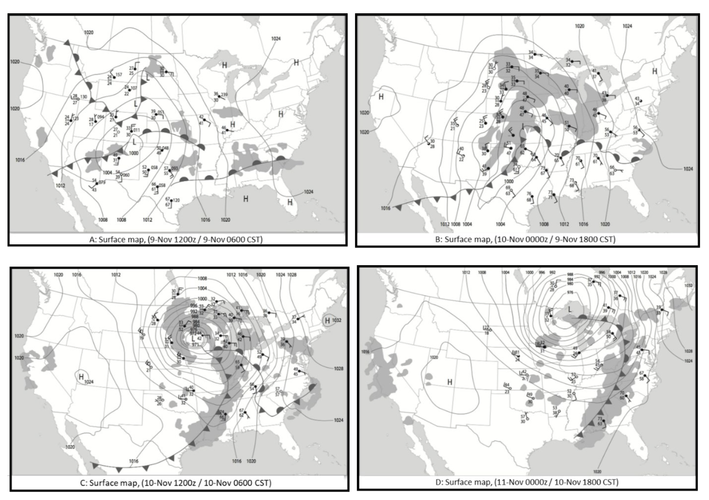

📚 Introduction
Although the Mid-latitude cyclone model discussed in Chapter 8 simplifies mid-latitude weather, it provides a starting point for understanding how these storm systems and their associated fronts affect the temperature, dew point, pressure, winds, clouds, and precipitation of the regions to which they move.
The figure below shows the development of a mid-latitude cyclone over a three-day period. On all three maps and at each station (A–D), the conditions are shown at the right with station models for each day. Each column represents the same station over the three days.
Question 1: Station Matching (4 pts)
Match the appropriate station to each column based on the weather maps and station models:
Instructions: Examine the three-day cyclone development maps and the station model columns. Identify which station (A, B, C, or D) corresponds to each column of weather observations.
🗻 Colorado Low Analysis
Mid-latitude cyclones provide useful case studies that link meteorological theory to the real world because their pronounced features reinforce key concepts related to storm development. The remainder of this lab we'll examine a classic "Colorado low" that forms on the lee side of the Rocky Mountains.
We will use upper-air and surface maps as well as time series of meteorological variables to investigate the storm's structure, how it developed, and how it affected specific places. Both Greenwich Mean Time, or Zulu time (z), and Central Standard Time (CST) are given for each map.
Question 2: Pressure Drop (2 pts)
Instructions: Examine the surface maps labeled A through D showing the storm development from November 9 to November 11.
